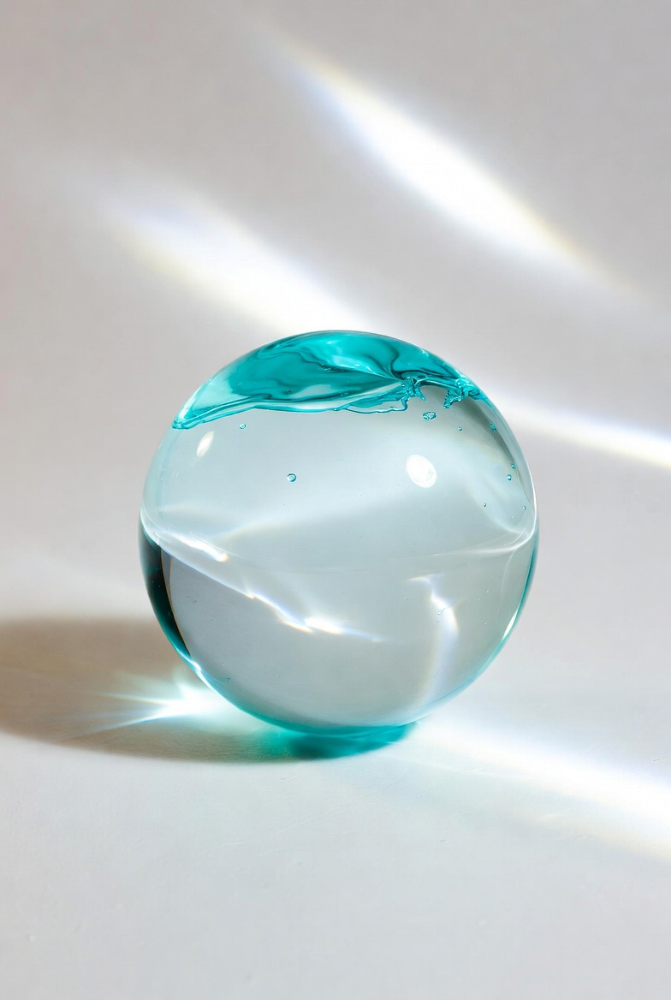
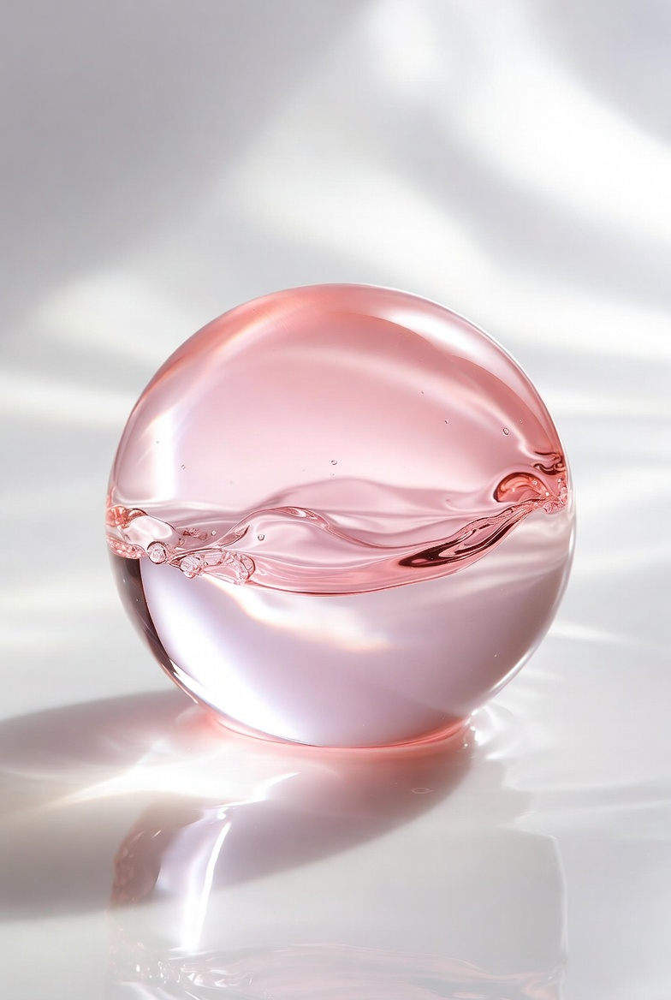
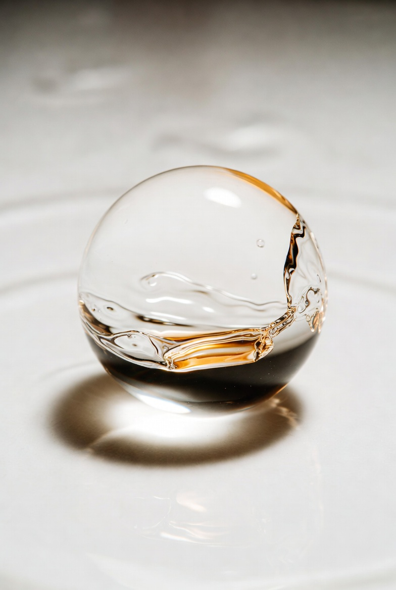
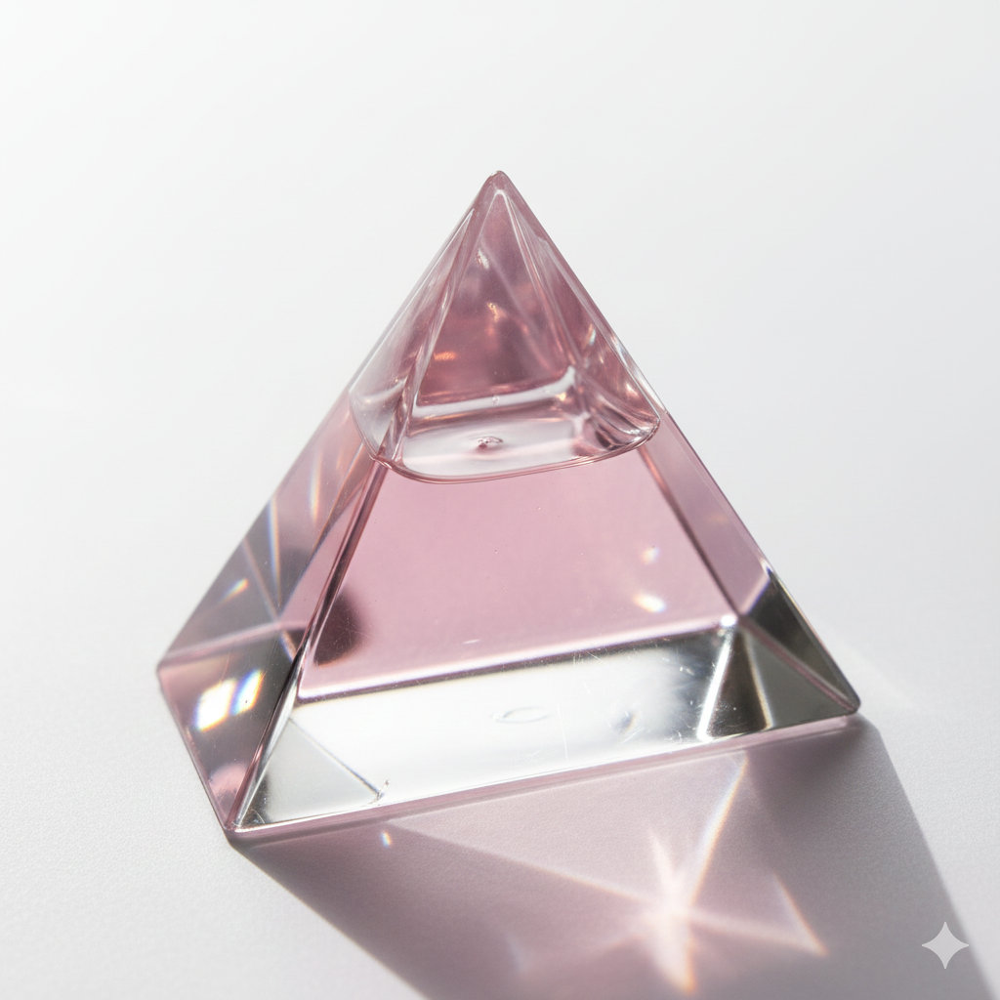
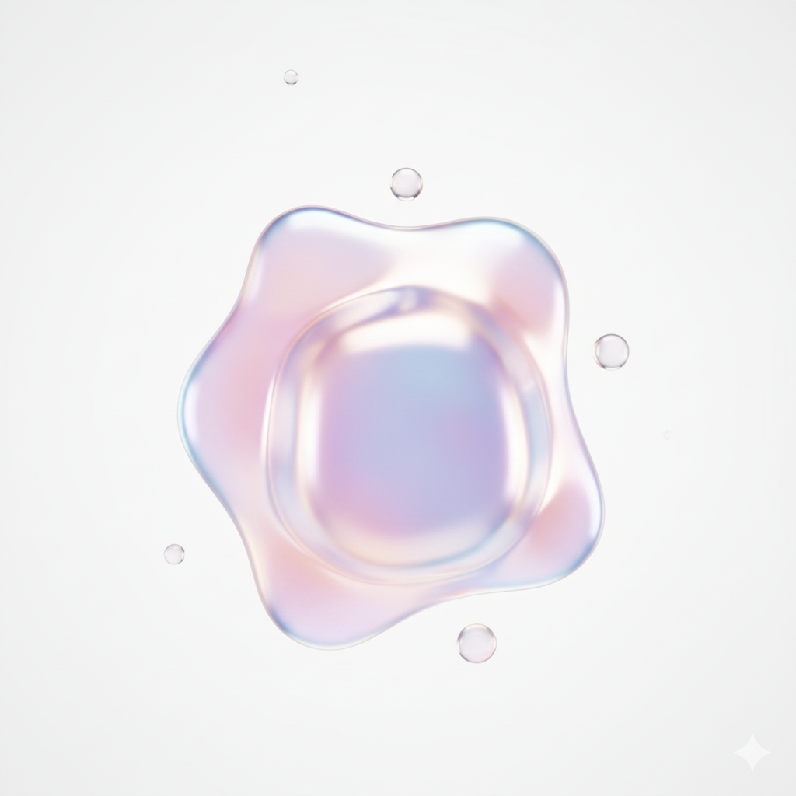
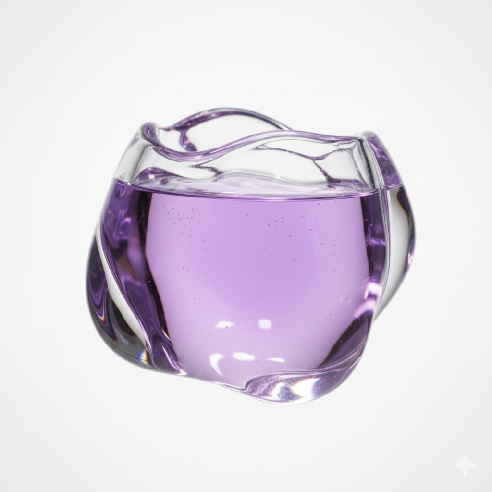
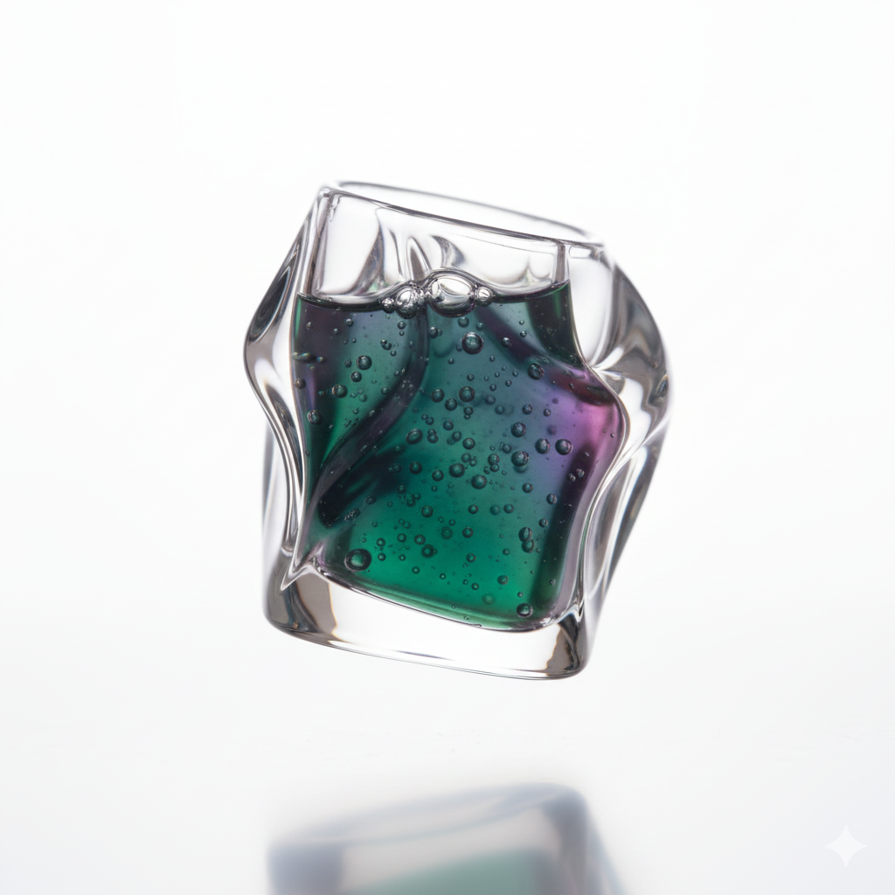
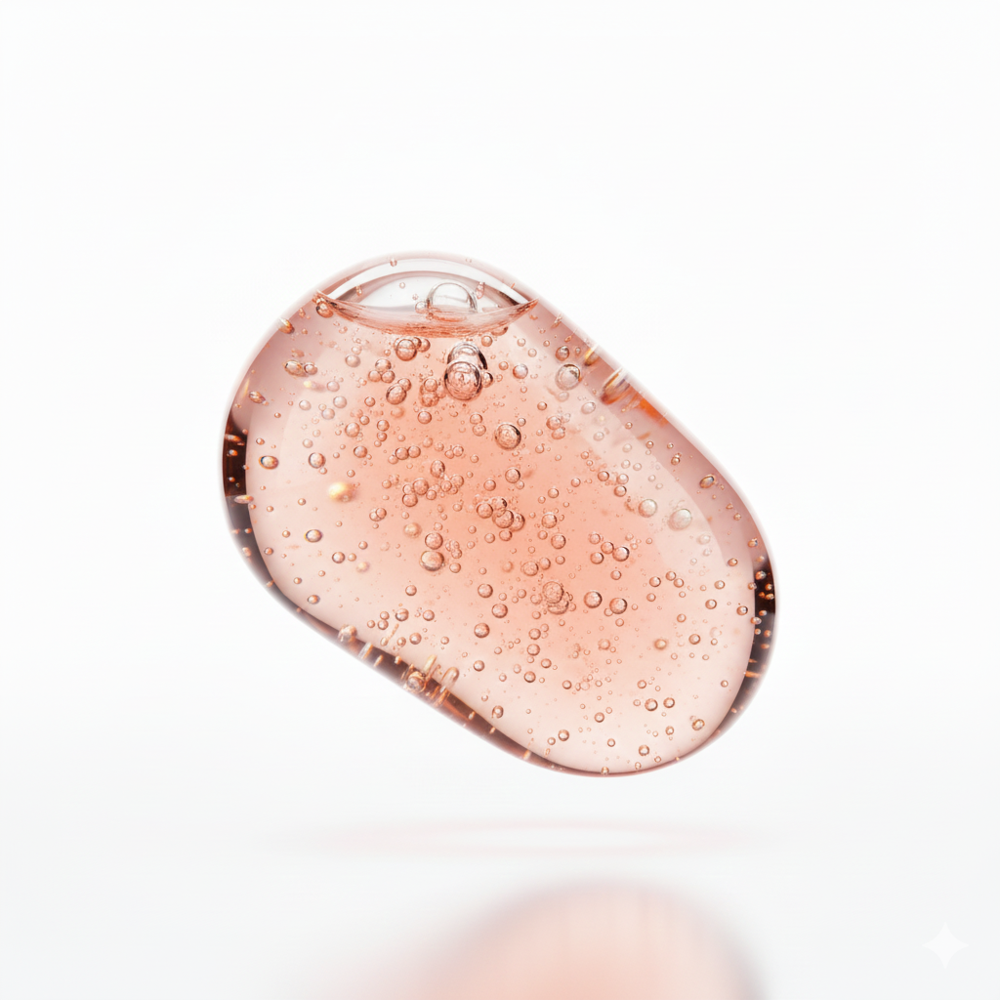
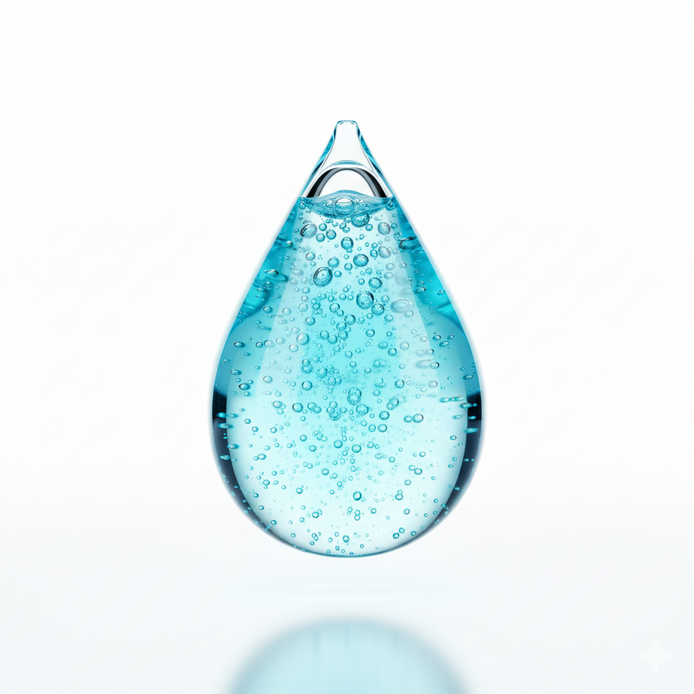
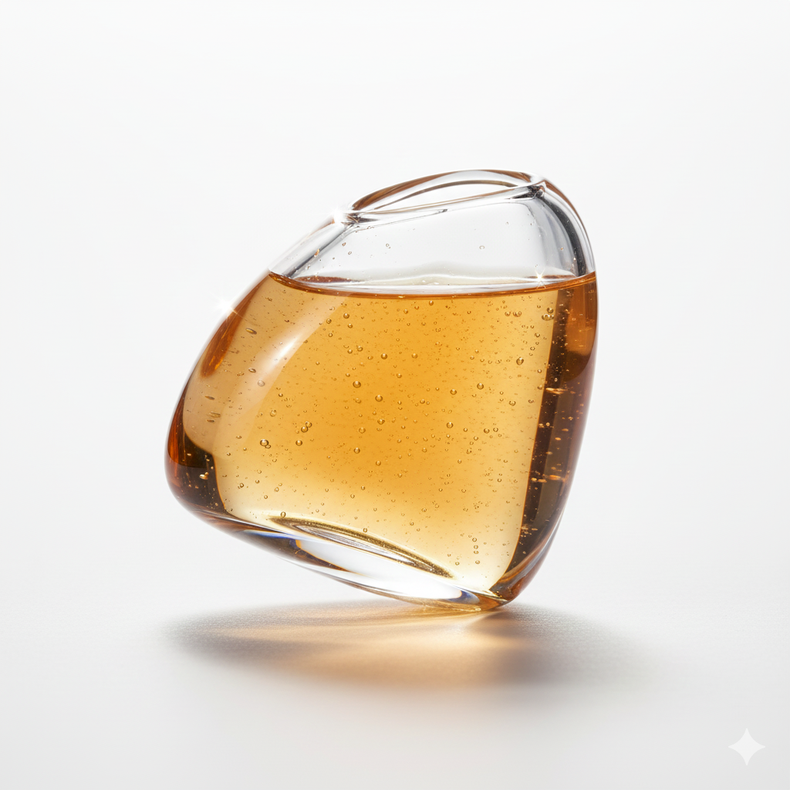

홈
제품
성분용어집
브랜드 소개
연락처
브라우저가 비디오 태그를 지원하지 않습니다.

히알루론산
강력한 보습 효과

레티놀
주름 개선 및 피부 재생

비타민 C
미백 및 항산화

세라마이드
피부 장벽 강화

판테놀
진정 및 보습
브라우저가 비디오 태그를 지원하지 않습니다.
브라우저가 비디오 태그를 지원하지 않습니다.

니아신아마이드
모공 개선 및 피지 조절

니아신아마이드
모공 개선 및 피지 조절

알란토인
진정 및 회복

콜라겐
탄력 개선

아데노신
주름 완화
×
브라우저가 비디오 태그를 지원하지 않습니다.
효능
EWG 등급
알레르기 유발 가능성
피부 타입별 적합성
권장사항
상세분석